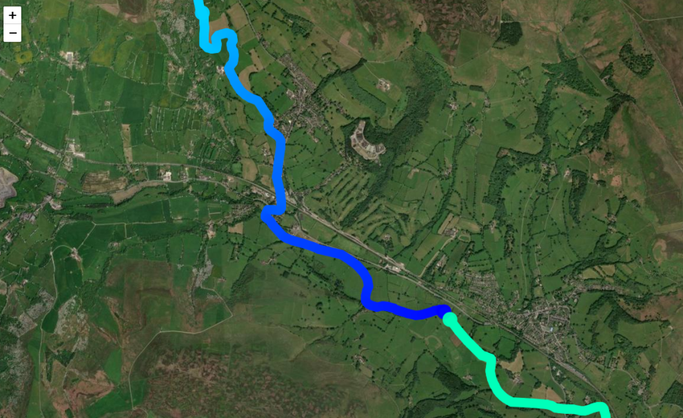

Data Correlation Tools:
Sensor Map Studio
An interactive sensor map and visualization tool showing both real time and historical data.
TBD
Placeholder for future feature
AquasensorGPT
An interactive chatbot that can answer questions about the river and its surrounding environment using live sensor data.